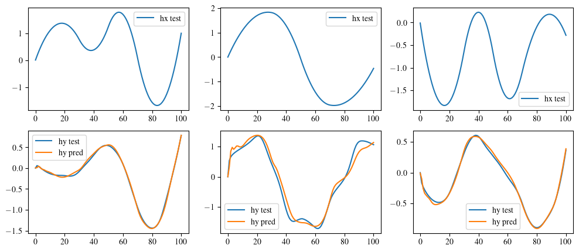

Multi-fidelity Nested RNN training¤
This notebook guidance on how to train MF-Nest-RNN of the MF-VeBRNN repo.
import torch
import matplotlib.pyplot as plt
import numpy as np
import pandas as pd
from MFVeBRNN.dataset.load_dataset import MultiFidelityDataset
from MFVeBRNN.method.mf_nest_rnn_trainer import MFNestRNNTrainer
from torch import nn
import warnings
warnings.filterwarnings("ignore")
dataset = MultiFidelityDataset(lf_train_data_path = "lf_dns_sve_0d1.pickle",
hf_train_data_path= "hf_dns_rve_0d1.pickle",
id_ground_truth=True,
id_hf_test_data_path="hf_dns_rve_0d1_gt.pickle",
id_lf_ground_truth_data_path="lf_dns_sve_0d1_gt.pickle",
ood_ground_truth=True,
ood_hf_test_data_path="hf_dns_rve_0d125_gt.pickle",
ood_lf_ground_truth_data_path="lf_dns_sve_0d125_gt.pickle",)
dataset.get_hf_train_val_split(num_hf_train=100, num_hf_val=10, seed=0)
dataset.get_lf_train_val_split(num_lf_train=100, num_lf_val=0, seed=0)
=============================================================
The dataset is loaded successfully.
Number of low-fidelity training samples: 2981
Number of high-fidelity training samples: 1291
Number of in-distribution test samples: 99
Number of out-of-distribution test samples: 99
=============================================================
class SimpleGRU(nn.Module):
def __init__(self,
input_size: int,
hidden_size: int,
num_layers: int,
output_size: int,
bias: bool = True):
super().__init__()
self.gru = nn.GRU(input_size=input_size,
hidden_size=hidden_size,
num_layers=num_layers,
bias=bias,
batch_first=True,
)
self.h2y = nn.Linear(hidden_size, output_size)
def forward(self, x, hx=None):
out, _ = self.gru(x, hx) # (B, T, hidden_size)
y = self.h2y(out) # (B, T, output_size)
return y
# define the high-fidelity model
hf_network = SimpleGRU(input_size=67,
hidden_size=64,
num_layers=2,
output_size=3)
# load the pre-trained low-fidelity model
lf_pre_trained_model = torch.load("single_fidelity_rnn_model.pth", weights_only=False)
# lf_pre_trained_model = torch.load("sf_vebrnn_trainer.pth", weights_only=False)
mf_model = MFNestRNNTrainer(
pre_trained_lf_model=lf_pre_trained_model,
net=hf_network,
nest_option="hidden",
device=torch.device("cuda" if torch.cuda.is_available() else "cpu"),
seed=1
)
mf_model.configure_optimizer_info(optimizer_name="Adam",
lr=0.001,
weight_decay=0.0)
mf_model.configure_loss_function(loss_name="MSE")
# train the high-fidelity model
_, best_epoch = mf_model.train(
hx_train=dataset.hx_train,
hy_train=dataset.hy_train,
hx_val=dataset.hx_val,
hy_val=dataset.hy_val,
num_epochs=1000,
batch_size=200,
print_iter=100,
verbose=True,
)
# save the mf model
Epoch/Total: 0/1000, Train Loss: 9.475e-01, Val Loss: 8.558e-01
Epoch/Total: 100/1000, Train Loss: 2.537e-02, Val Loss: 2.172e-02
Epoch/Total: 200/1000, Train Loss: 1.910e-02, Val Loss: 1.637e-02
Epoch/Total: 300/1000, Train Loss: 1.628e-02, Val Loss: 1.475e-02
Epoch/Total: 400/1000, Train Loss: 1.316e-02, Val Loss: 1.344e-02
Epoch/Total: 500/1000, Train Loss: 1.030e-02, Val Loss: 1.203e-02
Epoch/Total: 600/1000, Train Loss: 8.073e-03, Val Loss: 1.047e-02
Epoch/Total: 700/1000, Train Loss: 6.675e-03, Val Loss: 8.580e-03
Epoch/Total: 800/1000, Train Loss: 5.421e-03, Val Loss: 7.409e-03
Epoch/Total: 900/1000, Train Loss: 4.473e-03, Val Loss: 6.308e-03
index = 2
hy_pred = mf_model.hf_predict(dataset.hx_id_gt_scaled)
fig, ax = plt.subplots(2, 3, figsize=(12, 5))
for i in range(3):
ax[0, i].plot(dataset.hx_id_gt_scaled[index, :, i], label='hx test')
ax[0, i].legend()
ax[1, i].plot(dataset.hy_id_gt_scaled[index, :, i], label='hy test')
ax[1, i].plot(hy_pred[index, :, i].cpu(), label='hy pred')
ax[1, i].legend()
# save the figure
plt.show()
